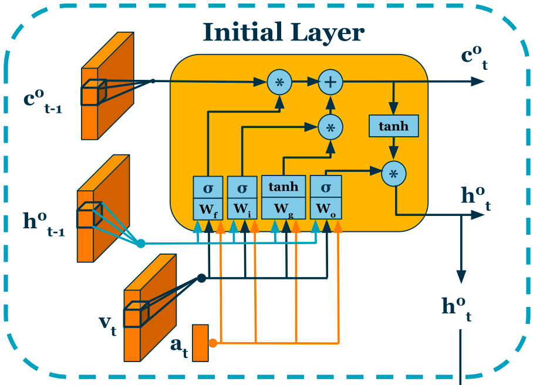
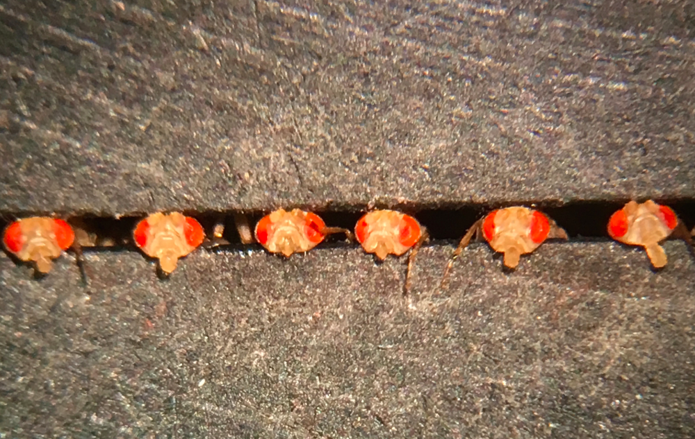

-
BOUQUET: Learning Large Vocabularies for Time Series and Images with Bernoulli Quantized Tokenization
To be released soon!
-
-
Deep Neural Imputation: A Framework for Recovering Incomplete Brain Recordings
[Paper]
Sabera Talukder*, Jennifer Sun*, Matthew Leonard, Bing Brunton, Yisong Yue
COSYNE 2023 | Learning from Time Series for Health Workshop, Neurips 2022
-

On the Benefits of Early Fusion in Multimodal Representation Learning
[Paper]
George Barnum*, Sabera Talukder*, Yisong Yue
Shared Visual Representations in Human & Machine Intelligence Workshop, Neurips 2020
-
-
A Smoke Removing DC-DC Converter Composed of a Seven Stage Class DE Rectifier and a Class ϕ2 Inverter
[Honors Thesis]
Sabera Talukder
Electrical Engineering Honors Thesis, Stanford University, 2018
-

Exploring Visual Memory Formation in Drosophila melanogaster
[Honors Thesis]
Sabera Talukder
Biochemistry Honors Thesis, Stanford University, 2018
-
A Portable Electrostatic Precipitator to Reduce Respiratory Death in Rural Environments
Oral Paper: [Paper]
Sabera Talukder, Sanghyeon Park, Juan Rivas-Davila
IEEE Compel 2017